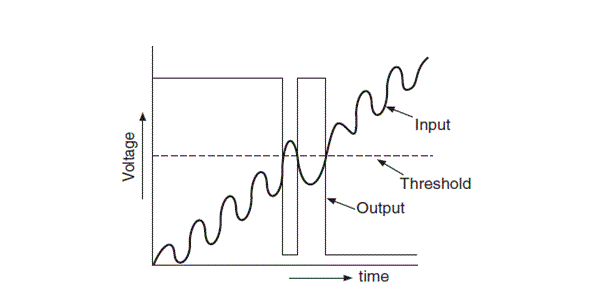
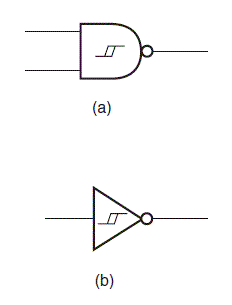
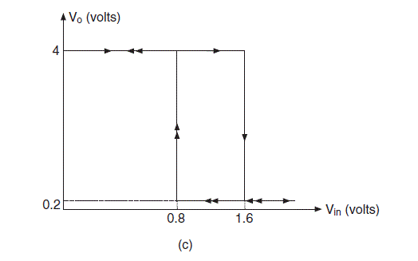
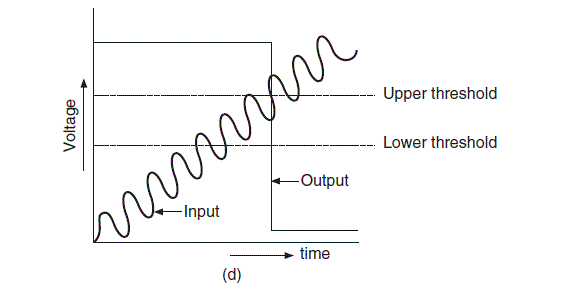

Suppose we are giving an ideal input signal to an inverter circuit and the response of that circuit is shown in the graph below.
response of conventional inverters to slowly varying inputs
And when a practical signal is fed to the inverter the response we get is shown in the figure below.

We can see from the diagram above that there is a small amount of noise is superimposed on the output signal. To overcome this problem a possible solution has been found which is if we differentiate the voltage levels one for low to high and other for high to low transition then this problem can be overcome. And this should be done by introducing some positive feedback in the internal gate circuitary, which we also know as the hysteresis phenomenon.
There are some logic gates which are naturally have hysteresis i.e. they have this property as built in, we don’t have to change the manufacturing procedure for them. This is mainly seen in NAND gates and inverters. These are known as Schmitt gates and they are capable of interpreting input voltage according to two threshold voltage which is for low to high and the other one is for high to low output transition. The (a) and (b) figures below shows the circuit symbols of Schmitt NAND and Schmitt inverter.

The difference between Schmitt gates and conventional gates are that the former have the ‘hysteresis’ nature which is identical to the B-H loop for a ferromagnetic material.

The figure above shows the typical characteristics of transfer of such a device. The difference which we can see between the two threshold levels is the hysteresis. The next figure shows the characteristics of a Schmitt inverter to a slowly varying noisy input signal. 
 by
by